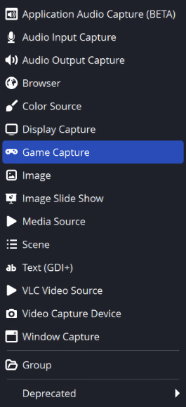

4手順でプラットフォームごとにチャットを分ける
例：一方のオーバーレイにはTwitchチャットだけ、もう一方にはYouTubeチャットだけを表示します。自分は1つのDockですべてを読めます。
- すべてのチャットをSocial Stream Ninjaに追加します。各チャットの新しいメッセージが次に表示されることを確認します： Streaming Chatドック。このDockにはフィルターをかけないでください。自分用の表示として使います。
- 生成された次のリンクをコピーします：
dock.htmlのリンクを2つ用意します。コピーすればセッション、パスワード、バージョン、サーバー設定が維持されます。 - それぞれのリンクの末尾にフィルターを追加します。例：
&onlyfrom=twitch&hidemenu（以下を参照： 下の表). - 各リンクをOBSに個別の次のソースとして追加します： ブラウザソース。分かりやすい名前を付けてください。例： Twitchチャット および YouTubeチャット.


- 取り込み Twitch + YouTube
- 1つのSSNセッション Dockには両方が表示される
- OBSの表示 TwitchのみとYouTubeのみ
チャットオーバーレイのフィルター
| 表示したい内容… | Dockのリンクに追加 |
|---|---|
| Twitchのみ | &onlyfrom=twitch&hidemenu |
| YouTubeのみ | &onlyfrom=youtube&hidemenu |
| TwitchとYouTubeを一緒に | &onlyfrom=twitch,youtube&hidemenu |
| Discord以外のすべて | &hidefrom=discord&hidemenu |
全体の例：
https://socialstream.ninja/dock.html?session=YOUR_SESSION_ID&onlyfrom=twitch&hidemenu使う項目：
onlyfrom および hidefrom はこちら。 ほかのオーバーレイ用の設定、たとえば onlytypeなどは、このページでは機能しない場合があります。YouTube Shortsは独立したタイプです。追加する値： youtubeshorts をキャプチャーが報告する場合。参照： ソースの種類.Featured Chat（選択したメッセージ）を分ける
- 生成された次のリンクをコピーします：
featured.htmlのリンクを2つ用意します。 - 追加する項目：
&onlyfrom=twitchを一方に、&onlyfrom=youtubeをもう一方に追加します。 - メッセージを選べるようにDockを開いておきます。
Featured Chatは1リンクにつき1プラットフォームに対応します。 カンマ区切りのリスト（
twitch,youtube）はDockでのみ機能します。フィルターが決めるのは、選んだメッセージをそのページが受け付けるかどうかだけです。別々のキューは作られず、拒否されたメッセージで画面が消えることもありません。コーナーを切り替えるときは、古いメッセージが残らないよう自分でクリアしてください。
同じプラットフォームの2チャンネル
onlyfrom=twitch はTwitch全体を意味し、特定のTwitchチャンネルではありません。チャンネル名や配信タイトルはフィルター名に使えません。
| したいこと… | 操作 |
|---|---|
| 各メッセージのチャンネルを表示する | 追加する項目： &showchannelname （ソースがチャンネル名を送信する場合に機能します）。 |
| 完全に独立した2つの配信を行う | 別々のキャプチャーインスタンスまたはプロファイルを使い、それぞれ独自のセッションと、その配信のソースだけを開いてください。 |
| ブラウザータブでDockを絞り込む | &filtertid=123 （詳細は下記）。 |
別のセッションを使い、対応するキャプチャーがないオーバーレイは空白のままです。オーバーレイの
label はルーティング用のページ名で、チャンネルフィルターではありません。方法 filtertid が機能する
- メッセージの送信元ブラウザータブの数値IDを指定します。複数のIDはカンマで区切ります。
- 探す項目：
tidを実際に取得したペイロードで確認します。参照： イベントリファレンス および コマンドとAPI. - プラットフォームのチャンネルIDではありません。
- ソースを開き直すとタブIDが変わることがあります。一致するタブIDがないソースは非表示になる場合があります。
- Dockでのみ機能し、Featured Chatのチャンネルフィルターには使えません。
各表示をテストする
- テストセッションにTwitchとYouTubeのテストメッセージを送ります。使用するもの： テストメッセージを作成.
- 両方がDockに表示され、各チャットオーバーレイには対象プラットフォームだけが表示されることを確認します。
- 各メッセージを選んで表示し、クリアを押します。プラットフォームを切り替えた後は、すべてのFeatured Chatページを確認してください。
- 各ソースの実際のメッセージでも確認します。テストメッセージには実際のタブIDがありません。
| 問題 | 試すこと |
|---|---|
| 表示が空白になる | 一時的にフィルターを外します。チャットが戻れば、ソースタイプやタブIDが正しいか確認してください。 |
| フィルターなしでも空白のまま | 参照： セッションとルーティングのトラブルシューティング. |
| OBSソースの名前を変えても表示が変わらない | 名前を変えても保存済みリンクは変わりません。URL自体を編集してください。 |
チャットとアラートを1つのブラウザータブに表示
オーバーレイを組み合わせる はオーバーレイのリンクを1つのタブやOBSブラウザーソースに重ねます。外配信中にスマートフォンでチャットを読むのに便利です。
- 次のリンクを貼り付けます： Streaming Chatドック のリンクを最下段のレイヤーに貼り付けます。
- 次のリンクを貼り付けます： 複数配信対応アラートボックス のリンクを最上段のレイヤーに貼り付けます。セッション、パスワード、接続オプションを含む完全なリンクを使ってください。
- 次はそのままにします： SSNの背景を透明にする が有効になっていることを確認してください。
- オンにする項目： このレイヤーでタップとスクロールを許可する をチャットで有効にします。アラートではオフにして、チャット操作を妨げないようにします。
- を押す プレビュー（Preview）、次に QRコードを表示 をスマートフォンで読み取ります。または次を押します： 結合したリンクをコピー を押してブラウザーソースに貼り付けます。
結合表示には設定用の操作部はなく、オーバーレイだけが表示されます。
レイヤー設定
| したいこと… | 操作 |
|---|---|
| オーバーレイを追加 | 最大8リンク。 |
| レイヤーを前面または背面に移動する | 矢印ボタンを使います。 |
| レイヤーのサイズや位置を変える | 開く項目： サイズと位置。幅、高さ、左位置、上位置をピクセル（450）またはパーセント（100%). |
| レイヤーを全画面に戻す | 全画面にリセット。幅と高さが空欄ならブラウザー全体に広がり、左位置と上位置が空欄なら左上から始まります。 |
| 左側にチャット列を作る（1920×1080） | チャットレイヤー：幅 450、高さ 1080、左位置 0、上位置 0。ほかのレイヤーは全画面のままです。 |
| 結合リンクを後で編集する | 編集用リンクを使うか、次を追加します： ?edit=1 を次の前に： #. |
| 最初からやり直す | 保存した設定をクリア. |
ピクセル指定のサイズはブラウザーのサイズ変更後も固定です。パーセント指定はブラウザーに合わせて変わります。各オーバーレイの内容と設定は維持されます。
保存、スマートフォン、プライバシー
- リンクとレイヤー設定は、未完成でもこのブラウザーに自動保存されます。プライベートブラウジングでは保持されない場合があります。
- 結合リンクとQRコードにレイアウト全体が含まれます。デスクトップで設定し、一度読み取ってスマートフォンにブックマークしてください。開くとスマートフォンのブラウザーにも設定が保存されます。
- デスクトップで編集しても古いリンクは更新されません。編集後に新しいリンクをコピーするか、QRコードを読み取ってください。セッションIDを通じた同期はありません。
- 結合リンクとQRコードは、オーバーレイのリンクと同様に非公開で管理してください。
- SSNのキャプチャーを動かし続け、スマートフォンから元のリンクと同じサーバーに接続できる必要があります。
localhostまたは127.0.0.1はスマートフォン自体を指します。 - 長すぎるリンクはQRコードに収まらない場合があります。その場合もリンクのコピーはできます。
OBS設定例：左のチャット列と全画面エフェクト
CSSは不要です。 各レイヤーは独立した領域です。OBSのブラウザーソースを次のサイズに設定します： 1920×1080。下に置くレイヤーから追加し、各レイヤーの次の欄には数値だけを入力します（カンマや「px」は不要）： サイズと位置.
| レイヤー | 幅 | 高さ | 左位置 | 上位置 |
|---|---|---|---|---|
| 1. ライブチャット／ドック | 450 | 1000 | 0 | 80 |
| 2. Hypeカウンター | 450 | 80 | 0 | 0 |
| 3. 絵文字／エモートウォール | 1920 | 1080 | 0 | 0 |
| 4. 注目チャット（Featured Chat） | 1470 | 1080 | 450 | 0 |
| 5. NinjaBacker（任意） | 1920 | 1080 | 0 | 0 |
上部80ピクセルにHypeを置き、その下にチャット列を配置します。Hypeの背後にチャットを全高表示する場合は、Live Chatの高さを次に設定します： 1080 、上位置を次に設定します： 0。シーンのサイズが違う場合は数値を調整します。
- オーバーレイの完全なリンクを貼り付けます。 既存のブラウザーソースからコピーすると、セッション、パスワード、スタイル、接続設定も引き継がれます。次は有効のままにします： SSNの背景を透明にする をオンのままにします。OBSのクロップ、変換、フィルター、カスタムCSSはリンクに含まれず、引き継がれません。
- Hypeを列の中央に配置します。 次の画面で：
hype.htmlのリンクでは、次を使います：&align=center。次の値をすべて置き換えます：align=leftまたはalign=rightを置き換え、さらに次を削除します：alignright。コンパクトにするには、次を試してください：&combineall&hidetitle&style=compact&scale=0.75（既存の値を置き換えます）。スタイルに合わせて、Hypeレイヤーの高さを広げてください。 - Featured Chatをチャット列の横に配置します。 設定する項目： 左位置 = 450 および 幅 = 1470 を組み合わせます（450 + 1470 = 1920）。幅1920のレイヤーを右へずらすと端が切れます。追加：
¢er→featured.htmlで、その領域内の短いメッセージを中央に配置します。シーン全体の中央にするには左位置0、幅1920にして、次を使います：¢er. - NinjaBackerを最後に配置します（任意）。 ビューアー用オーバーレイのリンクを最上段に貼り、右から入るアニメーションを設定します。結合ツールは領域と順番を、NinjaBackerはアニメーションを制御します。背景を透明にし、サイト側で埋め込みを許可する必要があります。このレイヤーは検証例には含まれていません。
- 1920×1080でプレビューします。 絵文字付きのチャットを送り、Dockからメッセージを選んで表示し、SSNのHypeデータを有効にします。通常のチャットだけではFeatured Chatのメッセージは選ばれません。
- 新しい結合リンクをOBSにコピーします。 そのブラウザーソースの幅を1920、高さを1080に設定します。プレビューのサイズはこの設定には反映されません。切り取らずにシーンに合わせます。レイアウトを変えるたびにリンクをコピーし直してください。古いリンクは古いレイアウトのままです。

パフォーマンス： 1つのブラウザーソースにしても、中の各オーバーレイはすべて動作します。OBSソースを減らしてもCPUやメモリの使用量が下がるとは限りません。設定後はプレビューを閉じ、元のソースをオフにしてOBSで比較してください。M1 Macの性能と独自のNinjaBackerリンクは未検証です。Live Chatを別にし、残りだけを結合することもできます。
レイヤーが空、またはチャットを覆う場合
| 問題 | 試すこと |
|---|---|
| レイヤーが空白になる | まず元のリンクを単独で開いてください。アラートはイベントが届くまで空白です。結合しても新しいソースのキャプチャーは始まりません。 |
| レイヤーの背景が不透明になる | 自動的に透明になるページ： dock.html, featured.html, multi-alerts.html、および minecraft.html。ほかのページは各自の透明設定が必要です。外部サイトによっては埋め込みが禁止されています。 |
| チャットをタップまたはスクロールできない | 透明なレイヤーでもタップを遮ることがあります。次をオフにします： タップとスクロールを許可 を、チャットより上にあり操作が不要なレイヤーで無効にします。 |
| スマートフォンで音が出ない | スマートフォンでは音声再生前にタップが必要な場合があります。そのレイヤーでタップを許可し、実際にタップしてください。本番で使う前に実機で確認します。 |